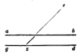
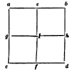
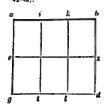
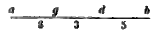
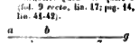
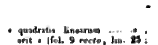
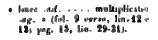
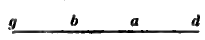
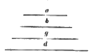

DISTINCTIO I — PROLOGUS, MENSURAE PISANAE & DISTINCTIO PRIMA¶
Incipit Practica Geometriae Composita a Leonardo Pisano de Filiis Bonaccii Anno M.CC.XX
Fons Criticus: boncompagni:1862 (Scritti di Leonardo Pisano, Vol. II, pp. 1–18 · Cod. Urb. Lat. 292, fol. 1r–11v) · English Translation · Summary · GEOMETOR Notes
Epistola et Prologus ad Magistrum Dominicum¶
Versio Anglica: Epistle & Prologue (p. 1) · Commentarius: Notae ad Prologum
ROGASTI AMICE DOMINICE ET REVERENDE magister, ut tibi librum in pratica geometrie conscriberem; igitur amicitia tua coactus, tuis precibus condescendens, opus iam dudum inceptum taliter tui gratia edidi, ut hi qui secundum demonstrationes geometricas: et hi qui secundum uulgarem consuetudinem, quasi laicalj more, in dimensionibus uoluerint operari super .viij. huius artis distinctiones, que inferius explicantur, perfectum inueniant documentum. Quarum prima est, qualiter latitudines camporum quatuor equales angulos habentium in eorum longitudines triplici modo multiplicentur. Secunda est de quibusdam regulis geometricis : et de inuentione quadratarum radicum in tantum quantum eis, qui per rationes solumodo geometricas uoluerint operari, necessarium esse putaui. Tertia de inuentione embadorum omnium camporum cuiuscunque forme. Quarta de diuisione omnium camporum inter consortes. Quinta de radicibus cubicis inueniendis. Sexta de inuentione embadorum omnium corporum cuiuscunque figure, que continentur tribus dimensionibus, scilicet longitudine, latitudine, et profunditate. Septima de inuentione longitudinum planitierum, et inuentione altitudinum rerum eleuatarum. Optaua de quibusdam subtilitatibus geometricis. Tamen antequam ad harum distinctionum perueniam doctrinam, quedam introductoria necessaria preponenda esse putaui. Ad hec igitur secundum ingenij mei capacitatem perficienda, tue correctionis aggressus fiducia, hoc opus curaui tuo magisterio destinare, ut que in eo fuerint emendanda, tua sapientia corrigantur.
f. 0008 · p. 1
Incipiunt Introductoria¶
Versio Anglica: Introductory Definitions (pp. 1–3) · Commentarius: Notae ad Introductoria
PVNCTVS est id quod nullam habet dimensionem, idest quod non potest diuidj. Linea est longitudo carens latitudine, cuius termini puncta sunt. Recta linea est que de puncto ad punctum recte protrahitur. Superficies quidem est que latitudinem, et longitudinem tantum habet, cuius termini sunt linee : et est plana, cum undique infra suos terminos super rectas lineas dilatatur. Planus uero angulus est inclinatio duarum linearum sese in plano tangentium, cum non iaceant indirecto; et est rectilineus, cum linee continentes angulum sunt recte. Cumque linea recta super lineam rectam steterit, feceritque circa se duos angulos sibi inuicem equales, dicitur rectus uterque angulus; et linea stans super ea, cui superstat, cathetus, siue perpendicularis appellatur. Amplus uero, uel obtusus angulus est qui maior est recto. Acutus namque qui minor recto inuenitur. Et terminus est finis rei. Figura quidem est que sub uno, uel pluribus terminis iacet. Figura quidem rectilinea est que a rectis lineis circumdatur. Trilatere quippe figure sunt que sub tribus rectis lineis continentur.
Quadrilatere uero sunt que quatuor rectis lineis ambiuntur. Multilatere autem figure sunt que sub pluribus quam quatuor lateribus comprehenduntur. Circulus enim est quedam plana figura sub una linea contempta; que linea uocatur circumferens, uel periferia, infra quem est punctus: a quo omnes recte protracte ad circumferentem lineam sibi inuicem sunt equales : punctus uero ille centrum circuli appellatur. Cumque per centrum aliqua recta protracta fuerit, et terminata in utraque parte periferie,
f. 0009 · p. 2

illa recta dyameter circulj nuncupatur, que diuidit circulum in duas equas portiones. Quarum una queque semicirculus dicitur. Portio uero circulj est figura, que continetur sub circulj periferia, et recta linea, siue maior, uel minor sit semicirculo. Sector uero circulj est quedam plana figura contempta sub duabus rectis a centro ad periferiam deductis, et arcu periferie ab ipsis rectis comprehenso. Recte linee, que in eadem superficie sunt, et ab utraque parte in infinitum protracte, et numquam sibi inuicem concurrunt, dicuntur equidistantes: in quibus si aliqua recta inciderit, faciet duos angulos interiores ab una parte rectos, aut duobus rectis equales : et exterior angulus est equalis interiori angulo sibi opposito; et anguli qui permutati sunt, sibi inuicem equantur: ut si in duabus lineis equidistantibus .a.b. et .g.d. incidat quedam recta .e.z.; anguli quidem .b.i.z. et .i.z.d. aut recti sunt, aut duobus equales rectis. Illud idem est ex angulis .a.i.z. et .i.z.g.; et exterior angulus .e.i.b. interiori sibi opposito .i.z.d. est equalis; et angulus .a.i.z. ei, qui permutati (sic) iacet, scilicet angulo .i.z.d. equatur: adhuc ergo et angulus .b.i.z. angulo .i.z.g. est equalis, ut in geometria ostenditur. Multa enim sunt que oportet scire eos, qui in mensuratione, et diuisione corporum, secundum subtilitatem geometricam procedere uolunt, que in euclide aperte monstrantur. Ex quibus sunt hec: super datam rectam, et terminatam constituere trigonum equilaterum: et datum angulum, uel lineam in duo equa secare: et super datam rectam a puncto dato in ipsa cathetum erigere: et super datam rectam á dato puncto, quod non sit in ipsa, cathetum ducere. Et recta super rectam duos angulos facit circa se duobus rectis equales. Et cum due recte se inuicem secant, duo anguli, qui sunt a uertice oppositi, sibi inuicem sunt equales. Et cum in duabus rectis recta incidit, et facit ab una parte duos angulos interiores, minores duobus rectis; si ab ipsa parte, á qua anguli sunt minores duobus rectis, ipse recte linee fuerint protracte, sibi inuicem concurrent. Et duarum linearum equalium et equidistantium due recte copulate fuerint, ipse sibi inuicem equales, et equidistantes erunt. Et ad datam rectam, ad quod in ipsa punctum datum, dato angulo rectilineo, equalem angulum rectilineum constituere. Et per datum punctum date recte equidistantem rectam lineam ducere. Et trigona, et paralilogramina super equas bases: uel super eandem basem inter easdem equidistantes constituta, sibi inuicem equalia sunt, scilicet trigonum trigono: et paralilogramum paralilogramo, etiam paralilogramum duplum est trigono. Dicitur enim paralilogramum figura, que habet latera opposita equalia, et equidistantia; cuius anguli oppositi sibi inuicem sunt equales: et dyameter etiam secat ipsum in duo similia trigona, et equalia; etiam si aliquod latus trigoni ab aliqua parte protrahatur, tunc faciet unum angulum extra ipsum trigonum, qui erit equalis duobus angulis sibi oppositis infra trigonum existentibus; et tres anguli cuiuslibet trigoni duobus rectis equantur. Et eidem equalia, et alternis equalia sunt. Et si equalibus equalia apponantur, tota sunt equalia. Et si ab equalibus equalia auferantur, que relinquuntur, sunt equalia. Et si inequalibus equalia apponantur, tota sunt inequalia. Et si ab inequalibus equalia auferantur, reliqua sunt inequalia. Et eiusdem dupla equa sibi inuicem sunt, et eiusdem dimidia alternis equalia sunt; et super se inuicem coaptata sibi inuicem equalia sunt. Et totum sua parte maius est. Et due recte spatium non continent. Sine his omnibus, et sine radicum inuentione, ipsi qui secundum uulgarem modum procedere uoluerint:
f. 0010 · p. 3cum his que ostendam inferius, conuenienti loco poterunt sufficienter procedere.
De Pertica Pisana et Eius Partibus¶
Versio Anglica: The Agrarian Metrology of Pisa (pp. 3–5) · Commentarius: Notae ad Perticam Pisanam
His ita determinatis; cum quibus mensuris mensurentur agri, breuiter proposui explicare.
Quidam enim mensurare consueuerunt agros cum mensuris cubitalibus, uel ulnis, aut cum passibus. Alij cum perticis, siue cum alio quolibet mensurabilj instrumento; quelibet tamen suprascriptarum mensurarum intelligenda est quandoque linealis, quandoque superficialis. Linealis est que sola longitudine constat. Superficialis que tantum habet in longitudine, quantum in latitudine, et in se ipsa quadrata existens, et quatuor rectis constat angulis. Ex his superficialibus mensuris quidam in multiplicando colligunt quandam quantitatem, quam uocant iugerum, uel aripennium, siue carrucam, siue tornaturam, uel culturam, uel alias quantitates, que alijs censentur uocabulis. Ego uero, secundum pisanorum incedere uolens consuetudinem, a pertica sumam initium. Pertica pisana linealis, sex linealibus pedibus constat: pes uero linealis decem et octo punctis linealibus constat. Pertica quoque quadrata, scilicet superficialis, sex pedibus superficialibus constat. Habet enim pes superficialis unam perticam in longitudine, et sextam partem pertice in latitudine. Vntia uero superficialis habet unam perticam in longitudine, et optauam decimam partem longitudinis pedis in latitudine. Quare superficialis pes est sexta pars superficialis pertice. Vncia superficialis est octaua decima pars superficialis pedis, uel centesima optaua pars superficialis pertice. Item superficialis pertica continet in se denarios .xxxvj. de mensura; et ita contingunt unicuique pedi denarij sex: et uncia superficialis est tertia pars denarij. Denarius quoque habet unum pedem in longitudine, et unum in latitudine; et ita denarius quadratus ex quatuor rectis constat angulis: et sic denarius est trigesima sexta pars totius pertice superficialis. Quatuor quidem pertice superficiales faciunt quandam mensuram, que uocatur scala. Quinque enim superficiales pertice, et semis faciunt unum panorum. Sexaginta nempe, et sex pertice quadrate faciunt mensuram quandam, que uocatur stariorum, ad quam uenduntur, et emuntur agri in episcopatu pisano ; et ad quam mensuram colligere embada, hoc est areas camporum monstrabo: ex suprascripto uero starioro multiplicato colligitur quedam alia suma (sic), siue quantitas, que uocatur modiorum. Est enim modiorum id quod continet in se staiora .xxiiij.
Item scale .xvj. et semis sunt staiorum unum; et scala una est undecima pars de duabus tertijs stariori; uel est scala soldi .xij. de mensura. Rursus panora .xij. sunt stariorum unum; quare panorum est duodecima pars stariori; et est panorum soldi .xvj., et stariorum est soldi .cxcviij. Mensurantur quidem agri, et spatia domorum cum perticis, et pedibus, et uncijs linealibus. Sed camporum embada colliguntur in starioris, et panoris, et soldis, et denarijs, uel in partes unius panori: domorum quoque spatia colliguntur in scalis, et in partibus scale, et in soldis, et denarijs. His ita explicatis, ostendendum est, quid ex multiplicatione perticarum, et suarum partium in suprascriptis mensuris eueniat. Quicquid enim multiplicatur in perticam uel perticas, illud idem procedit ex ipsa multiplicatione: vt si pertica, uel pertice multiplicentur in perticas, quicquid ex multiplicatione colligitur, pertice erunt. Verbi gratia: tres pertice in nouem perticas multiplicate, faciunt perticas .xxvij. Et si pertica, uel pertice multiplicantur in panora, uel panora in perticas, quicquid ex multiplicatione consurgit, erunt panora. Verbi gratia: tres pertice multiplicate in nouem panora, uel nouem panora in tres
f. 0011 · p. 4perticas, faciunt panora .xxvij.; et ita intelligendum est de multiplicatione perticarum in scalas, et stariora, et modiora; uel ex multiplicatione scalarum, et stariorum, et modiorum in perticas. Rursus pedes multiplicati in perticas, uel pertice in pedes, erunt pedes, siue medij solidj. Verbi gratia: tres pedes multiplicati in perticas nouem: uel nouem pertice in pedes tres, erunt pedes .xxvij., scilicet solidi xiij., et \(\frac{1}{2}\) de mensura. Item uncie multiplicate in perticas, uel pertice multiplicate in uncias faciunt uncias, uel tertias unius denarij. Verbi gratia: uncie .iiij. multiplicate in perticas nouem, uel econtra, surgunt in uncias .xxxvj., hoc est in denarijs .xij. mensure. Adhuc pedes multiplicati in pedes surgunt in denarios. Verbi gratia: pedes tres multiplicati in pedes quinque surgunt in denarios .xv. Iterum pedes multiplicatj in uncias faciunt octauas decimas unius denarij. Et uncie multiplicate in uncias faciunt octauas decimas partes octaue decime partis unius denarij, scilicet tercentesimas uigesimas quartas unius denarij.
Et nota quia semper mensure que multiplicantur sunt lineales; et que colliguntur ex multiplicatione earum sunt superficiales. Nec non sciendum est, quod pertice .100. superficiales sunt stariorum unum et dimidium; et insuper pertica una, et centenarium scalarum est stariora sex; et insuper scala una, et centenarium panororum est stariora \(8\frac{4}{6}\). Item quia soldi \(16\frac{1}{2}\) sunt panorum unum; ergo soldi .33 sunt panora .2.; et soldi \(49\frac{1}{2}\) sunt panora .3.; et soldi 66 sunt panora .4.; et soldi \(82\frac{1}{2}\) sunt panora .5.; et soldi .99. sunt panora .6. Item scale \(5\frac{1}{2}\) sunt panora .4.; et scale .11. sunt panora .8. Et nota quia ideo facimus mentionem de scalis, quia quidam utuntur colligere mensuras terrarum in scalis; et de ipsis scalis faciunt panora. Vnde nos relinquimus in hoc opere laborem de ipsis scalis; et docebimus colligere mensuram terrarum per stariora, et per panora, et per soldos, et per denarios. Vnde dicendum est, quod pertice \(5\frac{1}{2}\) multiplicate in perticas quotlibet, tot panora ex multiplicatione eueniunt, quot fuerint ille pertice, in quas pertice \(5\frac{1}{2}\) multiplicate fuerint: quare pertice .11. multiplicate in perticas quotlibet reddunt tot panora bis, quot ille pertice sunt: quare pertice \(16\frac{1}{2}\) multiplicate in perticas quotlibet reddunt tanta panora ter; et pertice .22. quater tanta; et pertice \(27\frac{1}{2}\) quinquies tanta; et pertice .33. sexies tanta; et pertice \(38\frac{1}{2}\) septies tanta; et pertice .44. octies tanta; et pertice \(49\frac{1}{2}\) nouies tanta; et pertice 55 decies tanta; et pertice \(60\frac{1}{2}\) undecies tanta. Similiter et si pertice .66. multiplicate sint in perticas quotlibet, duodecies tanta panora egrediuntur ex multiplicatione illarum perticarum, in quas pertice .66. multiplicate fuerint, hoc est tot stariora, quot fuerint ille pertice : propter quod et pertice 132. multiplicate in perticas quotlibet faciunt bis tanta stariora; et sic intelligas de similibus. Et hoc est quod diximus superius de panoris, et starioris, et modioris multiplicatis in perticas; quia illud idem est multiplicare perticas .22. in perticas .3., quod panora .4. in perticas .3. Est enim illud idem multiplicare perticas .132 in perticas quotlibet, quod multiplicare stariora .2. in easdem perticas. Et notandum, quod pertica una in latitudine, et \(5\frac{1}{2}\) in longitudine est panorum unum; et pertica una in latitudine, et duplum de perticis \(5\frac{1}{2}\) in longitudine est duplum unius panorj; et sic intelligas de triplo, et quadruplo et de alio quouis multiplice perticarum \(5\frac{1}{2}\), quod fuerit in longitudine, et pertica una in latitudine. Item pertica una in latitudine, et pertice .66. in longitudine est stariorum unum. Quare
f. 0012 · p. 5



pertice due in capite, et pertice .66. in longitudine sunt stariora .2.; et pertice .3. in capite, et pertice .66. in longo sunt stariora .3.; et sic intelligatur in similibus. Rursus duplum de pertica una in capite, et dimidium perticarum .66. in longum est unum stariorum; et triplum unius pertice in capite, et tertium de perticis .66. in longum est similiter stariorum unum: et hoc intelligas de alio quouis multiplice unius pertice, si fuerint in capite; et ex eadem parte de perticis .66., si fuerint in longum. Vnde si queratur, cum pertice .6. fuerint in capite alicuius campi quadrati, quot pertice erunt in longo ipsius, ut perficiatur stariorum; tunc quia .6. est sexcuplum de pertica una, sextum de perticis .66., scilicet .11. accipies, et habebis longitudinem ipsius agri. Item si in capite fuerint pertice .7., perficietur stariorum: si in longum habueris septimam de perticis 63, egredientur pertice .9.; et de perticis tribus que restant a 63 usque in 66 fac pedes, erunt pedes .18.; quos diuide per .7., exibunt pedes .2, et restant pedes .4. diuidendj: ex quibus fac uncias, erunt uncie .72.; quas diuide per .7., exibunt uncie \(10\frac{2}{7}\); et sic habemus perticas .9., et pedes .2., et uncias \(10\frac{2}{7}\) pro \(\frac{1}{7}\) perticarum .66.: sunt enim hec ualde utilia, ut in suo demonstrabitur loco.
f. 0012 · p. 5
Incipit Distinctio Prima de Multiplicatione Latitudinum Camporum Quadratorum¶
Versio Anglica: Distinctio I (pp. 5–18) · Commentarius: Notae ad Distinctionem I
Si uolueris metiri campum quadrilaterum: equilaterum: et equiangulum .a.b.c.d. habentem in singulis lateribus perticas .2. Dico quod eius area est illud quod colligitur ex multiplicatione lateris .a.c. in latus .a.b. sibi contiguum, scilicet duarum perticarum in duo; et sic est eius embadum perticarum .4. superficialium. Diuidantur autem linee .a.b. et .c.d. in duo equalia super puncta .e., .f.; et protrahatur linea .e.f.. Item diuidantur linee .a.c. et .b.d. in duo equalia super puncta .g., .h., et protrahatur linea .g.h.; et sic erit diuisum quadrilaterum .a.b.c.d. in quatuor quadrata equalia et ortogonia, quorum unumquodque habet in singulis lateribus perticam unam; et sic sunt pertice .4. superficiales in toto embado quadrilateri .a.c.d.b.. Est enim .a.e. recta equalis, et equidistans recte .c.f.; et equidistans linee .ac.; et .ef. est equalis et equidistans linee .bd.; cum ei sit equidistans et equalis linee .a.c.: similiter enim inuenietur linea .gh. equidistans et equalis utrique linee, scilicet .ab. et .cd.: et quoniam linea .ef. equidistans est linee .ac., et linea .ae. linee .cf.; angulus ergo .aef. angulo .acf. sibi opposito est equalis. Rectus quidem qui sub .acf. Rectus uero qui sub .aef.: propter eadem ergo ostendetur rectus angulus .e.f.c., cum sit equalis recto angulo .c.a.e. Quare ortogonium est quadrilaterum .e.a.c.f., et continet in se duas perticas quadratas, quarum una est .e.a.g.i. quadrilaterum, et alia est .i.g.c.f. Ostenditur enim per supradicta omnes angulos esse rectos, et angulos, qui ad .g. et ad .h. Nam superficies .e.c. continet dimidium superficiei .b.c.; quare et superficies .ec. superficiei .ed. est equalis: ergo totius superficiei .a.d. embadum est iiij.or perticarum, ut prediximus. Item sit quadrilaterum longum rectiangulum .a.b.g.d., in cuius capita opposita, scilicet in .ag. et .bd sint pertice due, et in unoquoque reliquorum laterum sint pertice tres. Dico quod eius embadum est perticarum .6., quod colligitur ex multiplicatione unius capitis in unum laterum, scilicet de .2. in .3.: ad hec itaque demonstranda, diuidatur recta .ag. et .bd in duo equalia
f. 0013 · p. 6
super puncta .ez.; et copuletur recta .ez.; et diuidatur utraque rectarum .ab. et .g.d. in tria equalia super puncta .i.t. et .k.l.; et copulentur recte .it. et kl; tunc ostendetur per supradicti quadratj doctrinam, totum quadrilaterum .abgd. in sex quadrilatera equalia et ortogonia esse diuisum, quorum unumquodque continet in singulis lateribus perticam unam: denique his per demonstrationes ostensis, qualiter latitudines dictorum camporum per longitudinem multiplicarj debeant, ostendamus. Si uoluerimus multiplicare perticas .7. in latitudinem per perticas .23. in longitudinem, multiplica primum perticas .7. per perticas .22., scilicet per panora .4., egredientur inde panora .28. suprascripta ratione: deinde multiplica unam perticam, que remanet de .23., per .7., erunt pertice quadrate .7.; ex quibus pertice \(5\frac{1}{2}\) sunt panorum unum; et pertica \(1\frac{1}{2}\) que remanet, est soldi \(4\frac{1}{2}\); et sic habemus in summa panora .29., et soldos \(4\frac{1}{2}\) mensure, hoc est stariora .2., et panora .5., et soldos \(4\frac{1}{2}\).
Item si uolueris multiplicare perticas .13. per perticas .31., multiplica primum perticas .11., scilicet panora .2., per perticas .31., erunt panora .62., scilicet duplum de .31.: deinde perticas .2., que remanent ex ipsis perticis .13., multiplica per perticas .31., erunt pertice 62. quadrate, que sunt panora .11., et denari .18.; que adde cum panoris .62. inuentis, erunt panora .73., et denari .18.; que diuide per .12.: ideo quia stariorum est panora .12., exibunt stariora .6., et panorum unum, et denari .18. mensure. Item si uolueris multiplicare perticas .19. per perticas .41., multiplica primum perticas .19. per perticas .33., erunt media stariora .19., scilicet stariora \(9\frac{1}{2}\): deinde multiplica .8., que remanent de .41., per perticas \(16\frac{1}{2}\), erunt panora .24.; quibus additis cum starioris \(9\frac{1}{2}\), erunt stariora \(11\frac{1}{2}\). Item quia remanent pertice \(2\frac{1}{2}\), extractis perticis \(16\frac{1}{2}\) de perticis .19., multiplicabis ipsas perticas \(2\frac{1}{2}\) iterum per suprascriptas perticas .8., erunt pertice .20. superficiales; ex quibus pertice \(16\frac{1}{2}\) sunt panora .3.; et relique pertice \(3\frac{1}{2}\) sunt soldi \(10\frac{1}{2}\); quibus panori .3., et soldis \(10\frac{1}{2}\) additis cum starioris \(11\frac{1}{2}\), faciunt in summa stariora .11., et panora .9., et soldos \(10\frac{1}{2}\). Cuius multiplicationis causam uolo demonstrationibus declarare. Esto quadrilaterum longum .a.b.g.d. continens in unoquoque capite, que sunt .a.b. et .g.d., perticas .19.; et in uno quoque longiorum laterum, que sunt ag. et bd., perticas .41.; accipiatur ex latere .ag. linea .ae. constans ex perticis .33., remanebit .eg. perticarum .8. Similiter ex linea .bd. accipiatur linea .bz. equalis linee .ae.; et copuletur recta .ez., eritque .ez. perticarum .19., cum sit equalis et equidistans utrique linee .ab. et gd. Et zd quidem est equalis linee .eg., scilicet perticis .8. Rursus ex lineis .ez. et gd. accipiantur recte .ei. et gt., quarum unaqueque sit perticarum \(16\frac{1}{2}\); et copuletur recta .it., eritque linea .it equalis utrique linee eg et zd. Cumque ex lineis .ez. et gd. auferantur linee .ei et gt., quarum unaqueque est perticarum \(16\frac{1}{2}\), remanebit unaqueque rectarum .iz. et td. perticarum \(2\frac{1}{2}\): cum itaque multiplicauimus superius perticas .19. in .33; tunc habuimus embadum quadrilateri .az, et remansit nobis quadrilaterum .ez.dg. ex toto quadrilatero a.b.g.d.; et fuit area quadrilateri .e.a.b.z. stariora \(9\frac{1}{2}\): deinde cum multiplicauimus .8. in perticas \(16\frac{1}{2}\), scilicet in panora .3., habuimus stariora .2. pro embado quadrilateri .e.i.t.g. Rursus cum multiplicauimus perticas \(2\frac{1}{2}\) in perticas .8., tunc habuimus perticas .20. quadratas, scilicet panora .3., et soldos \(10\frac{1}{2}\) mensure pro embado quadrilateri .i.z.d.t. Nam tria quadrilatera .az. et .e.t. et .tz. toti quadrilatero .a.b.g.d equantur; et hoc uoluimus demonstrare. Item si
f. 0014 · p. 7uis multiplicare perticas .25. per perticas .52., multiplica primum perticas .22. ex ipsis perticis 25., scilicet panora .4., per perticas .52., erunt tertie unius stariori .52. propter panora .4., que sunt tertia pars unius stariori. Sunt enim tertie .52. stariori stariora \(17\frac{1}{3}\): deinde perticas .3., que remanent á 22 usque in .25., multiplica per perticas \(49\frac{1}{2}\) ex illis perticis .52, scilicet per panora .9., erunt panora .27.; quibus additis cum starioris \(17\frac{1}{3}\), reddent stariora 19., et panora .7.: post hoc multiplica ipsas perticas .3. per perticas \(2\frac{1}{2}\), que sunt á \(49\frac{1}{2}\) usque in .52., erunt pertice \(7\frac{1}{2}\), scilicet panorum unum, et soldi .6.; et sic habebis in summa stariora .19., et panora .8., et soldos .5.: uel aliter multiplica 25 per 52, erunt pertice 1300., que sunt stariora 13 cum totidem medijs starioris, et insuper pertice .13., scilicet stariora .19., et panora .8., et soldi .6., ut predixi. Item si uis multiplicare perticas .31. per perticas .69., multiplica primum perticas .31. per perticas .66., scilicet per stariorum unum, erunt stariora .31. Item multiplica 3, que remanent á 66 usque in .69., per perticas .31., erunt pertice 93, que sunt panora .17, minus denari .18.; et sic habemus in summa stariora .32., et panora .5., minus denari .18. Item si uis multiplicare perticas 43. per perticas 85., multiplica primum perticas 43. per perticas \(82\frac{1}{2}\), scilicet per panora .15., erunt panora quindecies .43., scilicet stariora 43. cum totidem quartis, hoc est stariora \(53\frac{3}{4}\): deinde multiplica perticas \(2\frac{1}{2}\), que remanent ab \(82\frac{1}{2}\) usque in .85., per perticas .43.; tamen multiplicabis primum ipsas perticas \(2\frac{1}{2}\) per perticas .33., scilicet per panora .6., erunt panora .15.; que adde cum starioris \(53\frac{3}{4}\), erunt stariora .55.: et multiplicabis iterum ipsas perticas \(2\frac{1}{2}\) per perticas .10., que remanent a 33 usque in .43., erunt pertice 25., que sunt panora .4., et soldi .9.; et sic habebis pro quesita multiplicatione stariora 55., et panora 4 et soldos 9. Item si uis multiplicare perticas .54. per perticas .113., multiplica primum perticas .54. per perticas .110., scilicet per panora 20., erunt panora 1080.; quibus diuisis per .12. reddunt stariora .90.: deinde multiplicabis perticas .3., que remanent á 110. usque in .113., per perticas .54., hoc est per panora 9 et perticas \(4\frac{1}{2}\), erunt panora .27., et pertice \(13\frac{1}{2}\), hoc est panora .29., et soldi \(7\frac{1}{2}\); quibus additis cum starioris 90, faciunt stariora 92., et panora .5., et soldos \(7\frac{1}{2}\). Item si uis multiplicare perticas .72 per perticas 149., multiplica primum perticas .66. per perticas .149., erunt stariora .149.: deinde multiplica perticas .6., que remanent á 66 usque in .72, per perticas 149.; tamen primum per perticas 132, scilicet per stariora .2, et postea per perticas .17, que remanent á 132 usque in .149., erunt stariora .12., et pertice .102., hoc est stariora .13., et panora 6, et soldi 9.; quibus additis cum starioris .149., faciunt stariora 162, et panora 6, et soldos .9.
Nunc satis dictum est de multiplicatione perticarum integrarum in integras, modo de multiplicatione earumdem cum pedibus dicere uolumus: et quia cum multiplicatur pes in perticas quotlibet, ut dictum est, ueniunt tot medij soldi, quot sunt ille pertice: si duo pedes multiplicantur in perticas, uenient tot soldi, quot sunt ille pertice. Et si pedes .3. multiplicantur in perticas, ueniunt tot soldi, quot sunt pertice, et insuper totidem dimidij soldi. Et si pedes .4. multiplicantur in perticas, uenient duplicati soldi. Et ex pedibus .5. multiplicatis in perticas ueniunt item duplicati soldi ipsarum perticarum, et insuper totidem dimidij. Et ex multiplicatione pedum in pedes ueniunt denari, ut supra diximus.
Sivis multiplicare perticas .12 et pedem .1. per perticas .25. et pedes .2., multiplica
f. 0015 · p. 8primum perticas 12 per perticas 25, erunt panora 54, et soldi .9.: retineas panora in manu dextra, et soldos in manu sinistra: deinde multiplica pedem .1. per perticas 25., erunt soldi \(12\frac{1}{2}\); quos adde cum soldis 9., erunt in manu sinistra soldi .21; et cum pedibus retineas drios (sic) 6., qui super sunt super illis soldis .21. Signa uero pedum sunt hec: positio punctę pedis sinistri super punctam dextri signat .1.: positio punctę sinistri super floccam dextri .2.; tactus calcanei dextri cum puncta pedis sinistri .3.; ducere pedem sinistrum post dextrum, et tangere punctam pedis dextri ab exteriori parte cum puncta sinistri .4.; ab eadem parte tangere cum puncta pedis sinistri nodum siue floccam dextri .5.: alia quinque signa sunt per ordinem eodem modo cum pede dextro tangendo sinistrum; undecimum uero signum est, cum ponitur calcaneum pedis dextri super floccam pedis sinistri: pluribus signis non indigemus, cum denari .12 faciunt unum solidum, qui soldus retinetur in manu sinistra. De signis manuum nil dicendum est, cum ipsa sciant omnes, qui sciunt abbacum. Vnde reuertamur ad propositum: multiplicabis iterum pedes .2. per perticas .12, erunt soldi .12.; quibus additis cum soldis \(21\frac{1}{2}\) seruatis, faciunt soldos \(33\frac{1}{2}\). Item multiplicabis pedem .1. in pedes .2., erunt denari .2.; quos adde cum denarijs .6., qui seruantur in pedibus, erunt denari .8.; quos serua iterum cum pedibus; et sic habebimus panora .54., et soldos .33, et denarios .8., scilicet stariora .4., et panora .8., et denarios .8. pro quesita multiplicatione. Item si uis multiplicare perticas .17, et pedes .2. per perticas .36, et pedes .3., multiplica primum perticas .17. per perticas .36., erunt stariora .9., et panora .3., et soldi \(4\frac{1}{2}\): retineas stariora in corde, panora retineas in manu dextra, soldos in sinistra, denarios in pedibus; super que omnia adde multiplicationem de pedibus .2. in perticas .36., scilicet soldos .36.; et multiplicationem de pedibus .3. in perticas .17., scilicet soldos \(25\frac{1}{2}\); et multiplicationem de pedibus .3. in pedes .2., scilicet denarios .6.; et quotiens excreuerint tibi soldi in manu sinistra, fac ex eis panora quotienscumque poteris; et sic habebis in summa stariora .9., et panora 7, et denarios .6. Item si uis multiplicare perticas .26, et pedes .4. per perticas .43., et pedes .5., multiplica primum perticas .26. per perticas .43., que sunt stariora .16., et panora .11., et soldi \(4\frac{1}{2}\). Item multiplica pedes .4., scilicet soldos .2., per perticas .43., erunt soldi .86., scilicet panora .5, et soldi \(3\frac{1}{2}\).: item multiplica pedes .5, scilicet soldos \(2\frac{1}{2}\) per perticas 26, erunt soldi .65: item multiplica pedes .4. per pedes .5, erunt denari 20.; quibus quatuor multiplicationibus in unum coniunctis, faciunt in summa stariora .17., et panora .8., et soldos 8., et denarios .8.
Sj uis multiplicare perticas .28., et pedem .1., et uncias .7. per perticas .53., et pedes .5., et uncias .12.; multiplica primum perticas .28., et pedem .1. per perticas .53., et pedes .5., erunt stariora .22, et panora .11., et soldi .11., et denari .5: deinde multiplica uncias .7., scilicet denarios \(2\frac{1}{3}\), per perticas .53.; tamen primum per 48., scilicet per soldos .4., et postea per denarios .5., erunt soldi .10., et denari \(3\frac{2}{3}\).: item multiplica uncias 12., scilicet denarios .4., per perticas .28.: primum quidem per .24., scilicet per soldos .2., et postea per .4., erunt soldi .9., et denari 4.: post hoc multiplica uncias .7. per pedes .5., et uncias .12. per pedem .1., erunt sexte unius uncie 47, scilicet denari \(2\frac{11}{18}\); et multiplica uncias .7. per uncias .12, erunt \(\frac{84}{324}\) unius denarij, de quibus mentio facienda non est, cum non sint uncia .1.: adde ergo reliquas multiplicationes in unum, reddent pro tota summa stariora .23., et soldos .14., et denarios .9. Item si uis multiplicare perticas .37, et pedes .2., et uncias \(5\frac{1}{3}\) per perticas .67, et pedes .4., et uncias \(10\frac{1}{4}\), multiplica primum perticas .37., et
f. 0016 · p. 9pedes .2., et uncias .5. per perticas .67, et pedes .4., et uncias .10. erunt stariora .38., et panora .4., et soldi .8., et denari .5. et parum amplius: super que adde multiplicationem de tertia unius uncie in perticas .67, et pedes .4., et uncias \(10\frac{1}{4}\), scilicet parum amplius de uncijs \(22\frac{1}{2}\). Et addes etiam multiplicationem de quarta unius uncię in perticas .37, et pedes .2., et uncias \(5\frac{1}{3}\), scilicet parum minus de unciis \(9\frac{1}{3}\), erunt in summa stariora 38, et panora .4., et soldi .9., et denari .5. parum minus. Et sic crebro studio utendo suprascriptis multiplicationibus poteris habere notitiam similium.
SI uolueris multiplicare perticas .17, et pedes .3. in perticas .28., et pedes .4., collocabis pedes lateris longioris sub pedibus lateris breuioris, et perticas sub perticis, scilicet pedes .4. sub pedibus .3.; et post ipsos pedes pone perticas .28. sub perticis .17. uersus sinistram retro, ut hic ostenditur; et multiplicabis pedes .3. per pedes .4., erunt denari .12.; quia cum multiplicamus pedes in pedes, egrediuntur ex multiplicatione denari, ut dictum est. Serua ergo pro illis denarijs .12., soldum .1. in manu sinistra; et multiplicabis pedes .3. per perticas 28; et pedes .4. per perticas .17 in cruce, secundum quod docui in multiplicationibus duarum figurarum contra duas in libro maioris guice abbaci; sed dimidiabis has multiplicationes multiplicando; hoc est multiplicabis dimidium peduum .3. in .28., uel dimidium de 28. in .3. Similiter multiplicabis dimidium pedum .4. per 17., uel dimidium de 17. per .4.; et hoc facies, quia ex multiplicato pede in perticam, egreditur inde pes, scilicet medietas unius soldi: quare multiplicatio pedum .3. in dimidium perticarum .28., scilicet in .14., faciunt soldos 42; quos adde cum soldo.1.seruato in manu, erunt soldi .43. in eadem manu; et multiplicatio medietatis pedum .4. in perticas .17. facit soldos .34; quibus additis cum soldis 43., faciunt soldos .77.; ex quibus facies panora, erunt panora .4., et soldi .11. Serua quidem his panora in manu dextra, et soldos in sinistra: post hec multiplicabis perticas .17 per perticas .28 per demonstratum modum; quia de multiplicatione perticarum in perticas satis subtiliter dictum est superius; et habebis in summa stariora .7., et panora .7., et soldos .3., et denarios .6.
ET Si uolueris multiplicare tantum perticas .19. in perticas .41., et pedes .4., collocabis perticas .41. sub perticis .19.; et in loco pedum ante .19. pones zefirum; et sub ipso ante perticas .41. pones pedes .4., ut hic ostenditur; et multiplicabis zefirum per pedes .4., faciet zefirum; et zefirum per dimidium de 41 faciet iterum zefirum; medietatem de pedibus .4. in .19. faciunt soldi 38., qui sunt panora .2. in manu dextra, et soldi 5 in sinistra; et perticas 19. in perticas .33 faciunt stariora \(9\frac{1}{2}\); et sic habebis in corde stariora .9., et in manu dextra panora .8., et in sinistra soldos .5.: et multiplicabis perticas .8., que sunt a 33 usque in .41., in perticas .19., scilicet in .11., et in .8., facient panora .16., et perticas .64.; que pertice 64 sunt panora .11., et soldi .9.; et sic capiunt in summa stariora 12, minus denaris .12. Item si uolueris multiplicare perticas .20., et pedes .4., et uncias .11. in perticas .46, et pedes .5., et uncias .12., collocabis perticas sub perticis, et pedes sub pedibus, et uncias sub unciis, ut hic ostenditur; et multiplicabis ad modum multiplicationum trium figurarum contra tres; et erunt uncie in loco prime figure, scilicet in loco unitatum, et pedes in loco secunde, scilicet decenarum; et pertice in loco tertie, scilicet centenariorum: quare multiplicabis uncias .11. per uncias .12, faciunt \(\frac{132}{324}\) unius denarij; quia ex uncia multiplicata in unciam, prouenit \(\frac{1}{324}\) unius denarij; nam regula de 324 est \(\frac{1\ 0}{18\ 18}\): quare si .132 diuiserimus per primum .18., qui est sub
f. 0017 · p. 10uirgula, exibunt \(7\frac{1}{3}\); uel sextam unciarum .12. multiplica per .11.; et quod prouenerit diuide per sextam de 18, exibunt similiter \(7\frac{1}{3}\), que sunt \(\frac{\mathrm{mo}}{18}\) unius denarij; seruabis .7. in manu, et fractiones seruabis in tabula, uel in corde; et multiplicabis uncias .11. in pedes .5.; et uncias .12. in pedes .4. in cruce; et adde has duas multiplicationes cum .7. seruatis, erunt .110., que sunt \(\frac{\mathrm{mo}}{18}\) unius denarij; quia ex multiplicatione unciarum in pedes egrediuntur \(\frac{\mathrm{mo}}{18}\) unius denarij: quare diuisis \(110\frac{1}{3}\) per 18, faciunt denarios .6., et \(\frac{1\ 2}{3\ 18}\); seruabis denarios .6 in manu, et fractiones in tabula, uel in corde; super quos addes multiplicationem tertię partis unciarum .11. in perticas 46., uel tertiam partem de perticis .46. in .11.; quia multiplicatio uncię in perticam facit \(\frac{1}{3}\) unius denarij, erunt denari \(174\frac{2}{3}\), qui sunt soldi .14., et denari \(6\frac{2}{3}\); super quos adde iterum multiplicationem tertię partis unciarum .12. in perticas .20.; et multiplicationem de pedibus .4. in pedes .5, erunt in summa soldi .22., et denari \(10\frac{2}{3}\): addes \(\frac{2}{3}\) unius denari cum \(\frac{1\ 2}{3\ 18}\) seruatis, faciunt \(\frac{2\ 14}{3\ 18}\) unius denari; et de soldis .22., et denaris 10. seruabis in manu dextra panorum unum, et in sinistra soldos .0., et in pedibus denarios .4.; super que addes multiplicationem medietatum pedum in perticas in cruce: et perticarum in perticas, ut in antecedentibus fecimus; et habebis in summa stariora .14., et panora .9., et soldos 4., et denarios \(4\frac{1\ 14}{3\ 18}\). Rursus si uis multiplicare perticas .21 per perticas 47, et pedes 2., et uncias .10, collocabis uncias .10 sub zefiro, et pedes .2 sub alio zefiro, et perticas 47. sub perticis 21., ut hic ostenditur; et multiplicabis uncias per uncias, scilicet zefirum per 10, facit zefirum: quod relinques, et multiplicabis .0. per 2., et .10 per 0. in cruce, faciunt zefirum; quod relinques iterum, et multiplicabis zefirum, quod est in loco unciarum, per \(\frac{1}{3}\) de perticis 47., et 10 per \(\frac{1}{3}\) de .21; et zefirum, quod est in loco pedum, per pedes .2., facient soldos .5., et denarios 10. Et multiplicabis zefirum, quod est in loco pedum, per \(\frac{1}{2}\) de perticis 47., et \(\frac{1}{2}\) duorum peduum in perticas .21., faciunt soldos 21.; et sic habes soldos 26, et denarios .10., hoc est panorum unum, et soldos 10, et denarios .4.: super quos adde multiplicationem de perticis .21. in perticas .47.; et habebis pro summa quesitę multiplicationis stariora .15., et panorum unum, et soldum .1., et denarios .4. mensurę. Et sic studeas semper cum zefiris supplere gradus laterum multiplicantium; ut quot sunt gradus in uno latere, tot sunt in alio: dicimus enim primum gradum uncias: secundum pedes: tertium perticas. Verbi gratia: uolumus multiplicare perticas 13, et uncias .11. per perticas .28., et uncias .14.; collocabis perticas sub perticis in tertio gradu, et uncias sub unciis in primo; et suppleatur secundus gradus, ponendo zefira inter uncias, et pedes, scilicet in secundo gradu, ut hic ostenditur: et multiplicabis numeros, secundum quod docuimus, et habebis in summa stariora .5, et panora .7., et denarios \(1\frac{5\ 14}{9\ 18}\). Item uolumus multiplicare perticas 14, et pedes .2. in perticas .31, et uncias .15.; scribes eos sic. Et multiplicabis zefirum unciarum per uncias .15, faciet .0.; quo .0. diuiso per 18., facit iterum .0.; quod relinques, cum nihil sit: et multiplicabis .0. unciarum per .0. pedum, et uncias .15. per pedes .2., faciunt .30.; quibus diuisis per .18., facit denarium \(1\frac{2}{3}\): et multiplicabis \(\frac{1}{3}\) de zefiro unciarum per perticas 31., et \(\frac{1}{3}\) unciarum .15. per perticas .14., et pedes .2 per .0. peduum; et addes cum denario \(1\frac{2}{3}\)., et facient soldos .6., minus \(\frac{1}{3}\) unius denarij. et multiplicabis dimidium pedum .2. per perticas .31., et dimidium zefiri per perticas .14.; et addes cum soldis .6. seruatis, facient soldos .37., minus \(\frac{1}{3}\) unius denarij, qui sunt panora .2., et soldi 4., minus \(\frac{1}{3}\) unius denarij: et de perticis .14. accipe perticas .11.; et
f. 0018 · p. 11multiplica eas per perticas .31., erunt panora .62.; et multiplicabis perticas .3., que remanserunt de perticis .14., per perticas .31.; primum per 22, et postea per .9.; uel in una multiplicatione per .31., erunt panora .16 et soldi .15.; et habebis in summa stariora .6., et panora .9., et soldos .2, et denarios \(5\frac{2}{3}\) mensurę.
Rursus si uis multiplicare perticas 17, et pedes .4., et uncias \(9\frac{1}{2}\). per perticas .32, et pedes .5., et uncias \(14\frac{3}{4}\); collocabis perticas sub perticis, et pedes sub pedibus, et uncias sub uncijs; multiplicabisque uncias \(9\frac{1}{2}\) per uncias \(14\frac{3}{4}\); sic primum .9 per 14. faciunt .126; super que adde medietatem de 14, et \(\frac{3}{4}\) de 9 in cruce, faciunt plus de 139; quibus diuisis per .18., ueniunt plus de .7.; que .7. serua in manu; et multiplicabis in cruce uncias \(9\frac{1}{2}\) per pedes .5., et uncias \(14\frac{3}{4}\) per pedes 4.; et adde cum .7 seruatis, et erunt plus de .113; que diuide per 18., erunt denari \(6\frac{1}{3}\); et multiplicabis \(\frac{1}{3}\) de \(9\frac{1}{2}\), scilicet \(3\frac{1}{6}\) per perticas .32., erunt denari \(101\frac{1}{3}\); quibus additis cum denaris \(6\frac{1}{3}\) seruatis, facient soldos .9., minus \(\frac{1}{3}\) unius denarij: super quos adde multiplicationem tertie partis de unciis \(14\frac{3}{4}\) in .17., uel econtra; quam multiplicationem sic facies: de \(14\frac{3}{4}\) accipe 12., cuius \(\frac{1}{3}\) in integrum est .4.; que .4. multiplica per perticas .17, erunt denari .68.: post hec ex \(2\frac{3}{4}\) accipe 2; et multiplica eas per 17., erunt uncie .34.; ex quibus fac denarios, scilicet diuide eas per 3, erunt denari \(11\frac{1}{3}\); et sic habes denarios \(79\frac{1}{3}\): post hec accipe \(\frac{1}{3}\) de \(\frac{3}{4}\) que restant, erit \(\frac{1}{4}\); quod multiplica per 17, erunt denari \(4\frac{1}{4}\); et sic habes denarios \(83\frac{1}{3}\frac{1}{4}\) pro multiplicatione de \(14\frac{3}{4}\) unciarum in .17.: uel aliter accipe \(\frac{1}{3}\) de 17., quod est \(5\frac{2}{3}\).; et multiplica ea per \(14\frac{3}{4}\). sic: 5 per 14 faciunt denarios .70.; et \(\frac{2}{3}\) de 14 sunt denari \(9\frac{1}{3}\); et \(\frac{3}{4}\) de 5 sunt denari \(3\frac{3}{4}\).; et \(\frac{2}{3}\) de \(\frac{3}{4}\) sunt \(\frac{1}{2}\) unius denarij; et sic habes denarios \(83\frac{7}{12}\) ut supra: uel aliter: super \(14\frac{3}{4}\) adde \(\frac{1}{4}\), erunt 15; cuius \(\frac{1}{3}\) est .5.; et multiplica per 17., erunt denari .85.; et ex ipso \(\frac{1}{4}\), quam iunxisti, accipe \(\frac{1}{3}\), erit \(\frac{1}{12}\); quam partem accipe de .17., que est denarius \(1\frac{5}{12}\); quem extrahe de 85., remanent, ut prediximus, denari \(83\frac{7}{12}\).; et sic studeas in similibus procedere melius quod tibi uidebitur, secundum numerum unciarum: additis ergo denarijs \(83\frac{7}{12}\). cum soldis 9, minus \(\frac{1}{3}\) unius denarij, faciunt soldos 16, minus \(\frac{3}{4}\) unius denarij; cum quibus adde multiplicationem peduum in pedes, scilicet 4. in .5., erunt denari .20., erunt soldi 17, et denari \(7\frac{1}{4}\).: super quos adde, ut supra, multiplicationem medietatis peduum per perticas in cruce, et perticarum in perticas, et habebis in summa stariora 8, et panora 10., et soldos .7., et denarios \(1\frac{1}{4}\).: potes enim aliter de fractionibus unciarum facere, uidelicet in principio, antequam incipias multiplicare. Accipe fractiones unciarum superiorum de perticis inferioribus: et fractiones unciarum inferiorum de perticis superioribus, ut in hac multiplicatione: pro uncia \(\frac{1}{2}\), que est in superioribus uncijs, accipe medietatem de 32; et pro \(\frac{3}{4}\), que sunt in uncijs inferioribus, accipe \(\frac{3}{4}\) de 17 in cruce, erunt 16: et \(12\frac{3}{4}\), hoc est uncie \(28\frac{3}{4}\), que sunt fere denari .10., quos serua; et delebis ipsas fractiones unciarum de multiplicatione; et multiplicabis tantum perticas 17, et pedes .4., et uncias 9 per perticas 32, et pedes .5., et uncias .14.; et super summam adde denarios .10. seruatos. Si uolueris multiplicare perticas 13, et pedes .2. per perticas .21., et pedes .3., cum pes sit \(\frac{1}{6}\) unius perticę, pone tot sextas post perticas, quot sunt pedes positi cum ipsis perticis, et habebis perticas \(13\frac{2}{6}\) ad multiplicandum per perticas \(21\frac{3}{6}\): pone sextas sub sextis, et perticas sub perticis, ut hic ostenditur; et pones ex parte .6. bis sub una uirga; et nihil super sic \(\frac{0\ 0}{6\ 6}\); et multiplicabis pedes 2 per 3, qui sunt super ambobus .6., erunt .6.; quem diuide
f. 0019 · p. 12primum .6., qui est ex parte sinistra sub uirga, quam modo posuimus, exibit .1., remanet .0.: retines itaque ipsum .1. in manu, et remanens .0. pone super ipsum \(\frac{0}{66}\); et multiplicabis .2., que sunt super .6., per 21.; et 3, que sunt super alium .6., per 13 in cruce; et addes multiplicationem eorum cum uno seruato, erunt .82.; que diuide per alium .6., exibunt pertice .13, et remanent .4.: pone .4. super ipsum .6. sic: \(\frac{0\ 4}{6\ 6}\), et 13 serua in manu; super que adde multiplicationem perticarum .13. in perticas .21., erunt pertice .286.; quas diuide per \(\frac{10}{116}\), scilicet per regulam perticarum stariori, exibunt \(\frac{0}{11}\ \frac{2}{6}\ 4\): copula hanc uirgulam cum prima, et habebis \(\frac{0\ 4}{6\ 6}\ \frac{0}{11}\ \frac{2}{6}\ 4\): scias quia cum ita feceris, quicquid extra uirgulam comprehenditur, sunt stariora; et super .6., qui est in capite uirgulę post integrum, sunt dupla panora; et super .11. sunt pertice: et intelliges unamquamque ipsarum esse soldos .2.; et super alijs duobus .6. sunt denari; quos accipies sic: multiplicabis figuram, que est super .6., per alium .6., qui est post ipsum; et addes figuram, que fuerit super ipsum .6. Verbi gratia: pro .4., que sunt extra uirgulam, habemus stariora .4.; et pro .2., que sunt super .6, habemus panora .4.; et pro 4, que sunt super alium .6., habemus soldos .2.; quia multiplicatio de .4. in .6., et addito zefiro, quod est super ipsum .6., surgit in denarijs .24. Item si uis multiplicare perticas .14., et pedes .5 per perticas .41.; sub .14. pone .41., et \(\frac{0}{6}\) sub \(\frac{5}{6}\) sic: et scias quia ideo posuimus \(\frac{0}{6}\) post 41., ut equiparentur fractiones subteriores cum fractionibus superioribus; et pone \(\frac{1\ 0}{11\ 6}\ \frac{0\ 0}{6\ 6}\) ex parte; et multiplicabis .5., quod est super .6., per .0., quod est super alium .6., faciet .0.: quare pones .0. super primum .6.; et multiplicabis in cruce 5 per 41., et .0. per .14., faciunt .205.; que diuide per sequentem .6., exibunt 34., et remanet .1.: pone .1. super 6, et 34. serua in manu; super quem adde multiplicationem de 14. in .41., faciunt 608; que diuide per \(\frac{1}{11}\ \frac{0}{6}\), que restant in uirgula diuisionis, remanebunt .3. super .11., et .1. super .6., et 9 extra uirgulam, ut in questione ostenditur: notantur enim in ipsa summa stariora .2., et soldi .9., et denari .6. mensurę. Item si uis multiplicare perticas .15., et pedes .3., et uncias 12 per perticas .42., et pedes .2., et uncias .15.; oportet ut uncias redigas in sextis unius pedis, scilicet in sextas sextę unius perticę: et quoniam uncie .18 faciunt pedem .1.; ergo uncie .3 faciunt \(\frac{1}{6}\) pedis; quare uncie .12. sunt \(\frac{4}{6}\) unius pedis; quas sextas pone in una uirga post \(\frac{3}{6}\): propter eadem ergo pro uncijs .15 pones \(\frac{5}{6}\) post \(\frac{2}{6}\) sub alia uirga, et habebis perticas \(15\frac{3}{6}\frac{4}{6}\) ad multiplicandum per perticas \(42\frac{2}{6}\frac{5}{6}\), ut hic ostenditur: post hec protrahe uirgulam ex parte, sub qua pone per ordinem .iiij.or senarios, et \(\frac{1\ 0}{11\ 6}\) cum ipsis sic: \(\frac{0}{6\ 6\ 6\ 6\ 11\ 6}\); et multiplicabis .4. per .5., qui sunt super primis sextis; et diuide per primum .6. uirgulę seruatę, exibunt .3., et remanent .2. super ipsum .6.; et multiplicabis in cruce 4 per 2, et 5 per 3, que sunt super uirgis; et addes cum tribus seruatis, erunt .26.; que diuide per secundum .6., exibunt .4., et remanent .2. super ipsum .6.: et multiplicabis .4. per 42, et 5 per 15, et 3 per 2; multiplicando uidelicet in antea, sicut multiplicamus tres figuras contra tres retrocedendo; et addes cum .4. seruatis, erunt 253.; que diuide per tertium .6., exibunt 42, et remanet .1. super ipsum .6.: super 42 uero addes multiplicationem de 3 in .42., et de 2 in .15 in cruce, facient .198.; que diuide per quartum .6., exibunt 33, et remanet .0. super ipsum .6.: et super 33 adde multiplicationem de 15 in 42., erunt pertice 663; quas diuide per .11., exibunt 60, et remanent .3. super ipsum .11.: deinde diuide .60. per 6., qui restant in capite uirgulę, exibunt .10. ante uirgulam, et .0. super ipsum .6.; et sic habes in
f. 0020 · p. 13

summa stariora .10., et soldos 9, et denarium \(1\frac{1\ 2\ 0}{6\ 6\ 6}\) mensurę: quia super primos duos senarios habemus partem unius denarij; et super alios duos .6. habemus denarios; et super .11. habemus perticas, scilicet triplos soldos; et super .6., qui est in capite uirgulę, habemus dupla panora. Rursus si uis multiplicare perticas .16., et pedem .1., et uncias .10. per perticas .43., et uncias \(14\frac{1}{3}\); rediges uncias in sextas unius pedis, erunt sexte \(3\frac{1}{3}\); de qua tertia fac sextas, erunt due sexte; et sic habes in superiori latere perticas \(16\frac{1}{6}\frac{3}{6}\frac{2}{6}\): possumus aliter facere sextas unius pedis de unceis (sic) .10.: quoniam uncie .10 sunt \(\frac{10}{18}\) unius pedis; ergo uncie .10. sunt \(\frac{20}{36}\) pedis: quare si diuiserimus .20 per regulam de .36., exibunt \(\frac{2\ 3}{6\ 6}\) unius pedis, ut diximus: similiter duplabis uncias \(14\frac{1}{3}\), erunt \(\frac{29}{36}\) unius pedis; et sic habes in subteriori latere perticas \(43\frac{0}{6}\frac{4}{6}\frac{5}{6}\), ut hic ostendimus: et pone sexties .6. sub una uirga post \(\frac{1\ 0}{11\ 6}\) sic: \(\frac{0}{6\ 6\ 6\ 6\ 6\ 6\ 11\ 6}\); et multiplicabis numeros, qui sunt super uirgulis; et integros, qui sunt ante uirgulas, ad modum .iiij.or figurarum in antea procedendo: uerbi gratia: multiplicabis .2 per 5, qui sunt super primo .6.; et diuides per primum .6.: deinde 2 per 4, et 5 per 3; et diuides per secundum .6.: post hec .2 per .0., et 5. per .1., et 3 per 4; et diuides per tertium .6.; et 2 per 43, et 5 per 16, et 3 per 0, et 4 per .1.; et diuides per quartum .6.; et habebis supra dictas .iiij.or sextas partes tantum unius denarij: deinde multiplicabis .3 per 43, et 4 per 16, et 1. per .0, et diuides per quintum .6.; et habebis super ipsum denarios: deinde multiplicabis .1. per 43, et 0 per 16, et diuides per sextum .6.; et habebis super ipsum .6 medios soldos: ad ultimum multiplicabis perticas .16 per perticas .43., et diuides per \(\frac{1\ 0}{11\ 6}\); et habebis super .11. triplos soldos, et super .6. dupla panora, et ante uirgulam stariora; et sic cum sextis sextorum pedis possumus procedere in infinitum, redigendo fractiones unciarum, que posite in multiplicationibus fuerint in sextis sextarum, si in ipsis ipse fractiones cadere potuerint: et si numerus sextarum unius lateris fuerit minus numero sextarum alterius, supplebis eas cum zefiris super ipsas sextas; hoc est si due sexte sunt in uno latere, et due sint in alio, et si tres tres, et deinceps. Et si fractiones unciarum minime in sextis sextarum reducere poteris, nequaquam per hunc modum cum ipsis fractionibus operari poteris; sed derelinquas ipsas fractiones; et multiplicabis residuum de ipsis fractionibus, que in sextis sextarum cadere non possunt; et ex ipsis operaberis, secundum quod superius diximus.
In modo secundo.
sed derelinquas ipsas fractiones; et multiplicabis residuum de ipsis fractionibus, que in sextis sextarum cadere non possunt; et ex ipsis operaberis, secundum quod superius diximus.
In modo secundo.
Potes enim per modum suprascriptum multiplicandi doctrinam reperire modum multiplicandj in alijs regionibus, secundum diuersitates mensurarum ipsarum. Et ut ea, que in hac secunda distinctione promisimus plenarie demonstrentur, quedam huic operi necessaria dignum duximus preponenda. Videlicet si numerus aliquis diuidatur in quantaslibet partes, et multiplicabitur unaqueque pars per totum numerum summa illarum multiplicationum equabitur quadrato totius numeri, scilicet multiplicationi ipsius numeri in se. Vt si numerus .ab. diuidatur in quantaslibet portiones, que sint .ag. gd. db. Dico quod si multiplicabitur ag. in .ab., et gd. in .ab., et adhuc db. in .ab., erunt ipse multiplicationes in unum coniuncte equales multiplicationi totius numeri .ab. in se. Quotiens enim unitas est in portione .ag., totiens numerus .ab. procreabitur ex multiplicatione ag. in .ab. Similiter quotiens unitas est in .gd., totiens numerus .ab. procreabitur ex multiplicatione .gd. in .ab.: propter eadem ergo quotiens unitas
f. 0021 · p. 14



in numero .db., totiens oritur numerus .ab. ex multiplicatione .db. in totum .ab. Quare quotiens unitas est in numero ab., scilicet in portionibus ag. gd. et .db., totiens coadunabitur numerus .ab. ex multiplicationibus ag. et gd. et db. in .ab. Verum quotiens unitas est in .ab., totiens numerus .ab. surgit ex multiplicatione .ab. in se. Quare summa multiplicationum .ag. et gd. et db. in .ab. equatur multiplicationi .ab. in se, quod oportebat ostendere. Nam ut hec clarius uideantur, esto recta .ab. .10. ulnarum; et portio .ag. sit .2.; .gd. uero .3; .db. quoque .5.; si autem multiplicentur 2. in .10., et 3 in .10., et .5. in .10., hoc est .ag, et gd., et db. in tota .ab.; et coniungantur multiplicationes in unum numerum .100. ex earum congregatione procreabuntur, que equantur multiplicationi de 10. in .10. Item si recta linea diuidatur in quantaslibet portiones; et unaqueque multiplicabitur per aliam quamlibet lineam, omnes multiplicationes in unum coniuncte equabuntur multiplicationi totius linee diuisę in aliam lineam. Quod ostendamus cum numeris. Sit linea .10. ulnarum diuisa in .2., et 3., et 5.; et alia quelibet linea sit .12. ulnarum. Siquidem si multiplicentur 2, et 3, et 5. in 12, et iungantur eorum multiplicationes in unum, nimirum equabuntur multiplicationi de 10. in .12., scilicet 120. Rursus si recta diuidatur ubilibet in duas portiones, erit multiplicatio unius portionis in se cum multiplicatione eiusdem portionis in aliam, equalis multiplicationi eiusdem portionis in totam lineam: ut si linea .ab. diuidatur super punctum .g., erit multiplicatio .ag. in se cum .ag. in .gb. equalis multiplicationi .ag. in tota .ab.: adiaceat itaque quedam recta .d. equalis recte .ag.; et erit multiplicatio linee .d. in .ag., et in .gb. equalis multiplicationi .d. in totam .ab.: uerum multiplicatio .d. in .ag. est sicut multiplicatio .ag. in se ipsam, cum recta .d. sit equalis recte .ag.; et multiplicatio recte .d. in .gb. est sicut multiplicatio recte .ag. in rectam .gb. Quare multiplicatio ag in se cum .ag. in .gb. equatur multiplicationi .ag. in .ab., ut oportebat ostendere. Vel si hoc cum numeris demonstrare uolumus, sit ag. 3, et bg. .7; quare tota .ab. erit .10.: multiplicatio quidem ag. in se, scilicet de 3 in .3 cum multiplicatione de 3. in .7., scilicet de .ag. in .gb., surgunt in .30., que equantur multiplicationi .ag. in .ab., scilicet de 3. in .10. ut dictum est. Adhuc si recta linea diuidatur ut accidat in duas portiones, erunt duo quadrati utriusque portionis cum duplo multiplicationis unius portionis in aliam, equales quadrato, scilicet multiplicationi totius linee in se. Vt si linea .ag. diuidatur in duas portiones, que sunt .ab. et .bg. Dico quod multiplicatio .ab. in se cum multiplicatione .bg. in se, et cum duplo multiplicationis .ab. in .bg., equatur multiplicationi totius .ag. in se ipsam. Quoniam linea .ag. diuisa est in duo in puncto .b., erit multiplicatio .ab. in se cum .ab. in bg., sicut multiplicatio .ab. in tota .ag.
Similiter et multiplicatio .bg. in se cum multiplicatione .gb. in .ba. est sicut multiplicatio .gb. in totam .ga.: ergo multiplicatio .ab. in se cum .bg. in se, et cum duplo multiplicationis .ab. in .bg. equantur duabus multiplicationibus, que sunt .ab. in .ag., et bg. in .ag. Verum multiplicatio ab. in .ag. cum .bg. in .ag. equatur multiplicationi .ag. in se. Quare quadratum .ab. cum quadrato .bg., et cum duplo multiplicationis .ab. in .bg. equatur quadrato linee .ag., quod oportebat ostendere. Quod etiam demonstrabimus cum numeris. Sit linea .ab. 3., et .bg. 7.; quare tota linea .ag. erit .10. Vnde si acceperimus quadratum linee .ab., scilicet .9.; et quadratum
f. 0022 · p. 15



.bg., scilicet .49., et duplum .ab. in .bg. equabuntur .100., scilicet multiplicationi .ag. in se ipsam. Iterum si recta linea diuidatur ubilibet in duas portiones, erit duplum multiplicationis unius portionis in totam lineam cum quadrato alterius portionis, equale duobus quadratis, scilicet quadrato totius linee, et quadrato ipsius portionis, que multiplicatur bis in totam lineam. Vt si linea .bg. diuidatur ubilibet super punctum .a. Dico quod duplum multiplicationis .ab. in .bg. cum quadrato linee .ag. equatur duobus quadratis linearum .bg. et .ba. Quoniam linea .bg. diuisa est in duo super punctum .a., erit multiplicatio .ba. in se cum .ba. in .ag., sicut multiplicatio .ba. in .bg. Quare in duplo multiplicationis .ba. in .bg. est bis quadratus linee .ba., et bis multiplicatio .ba. in .ag. Verum semel quadratus .ba. cum quadrato .ag. cum duplo multiplicationis .ba. in .ag. equatur quadrato totius linee .bg. Quare duo quadrati linee .ba. cum quadrato linee .ag., et cum duplo multiplicationis linee .ba. in .ag. equatur duobus quadratis linearum .bg. et ba. Sed duo quadrati linee .ba. cum duplo multiplicationis .ba. in .ag. ostensi sunt equales duplo multiplicationis linee .ba. in totam lineam .bg.: propter quod duplum multiplicationis linee .ba. in totam lineam .bg. cum quadrato linee .ag. equatur duobus quadratis linearum .bg. et ba., quod oportebat ostendere. Quod idem ostendamus cum numeris. Sit tota linea .bg. 10; de qua sit portio .ba. 3., et portio .ag. 7.; duplum quidem multiplicationis .ba. in .bg., scilicet de 3. in .10., cum multiplicatione linee .ag. in se, que surgit in .49., nimirum in .109. ascendunt, que equantur multiplicationj linee .bg. in se, scilicet .100., et linee .ab. in se, scilicet .9. Si recta linea diuidatur in duo equalia, et totidem inequalia, erit multiplicatio inequalium portionum, scilicet unius in aliam cum quadrato linee, que iacet inter utramque sectionem, equalis quadrato dimidię linee diuisę. Vt si linea .ab. diuidatur in duo equalia super punctum .g., et inequalia super .d. Dico quod multiplicatio .ad. in .db. cum quadrato linee .dg. equatur quadrato linee .ag. Quoniam linea .db. diuisa est ubilibet super punctum .g., cui adiacet quedam alia recta .ad., erit multiplicatio .ad. in .db. equalis duabus multiplicationibus linee .ab. in .bg. et in .gd. Verum linee .bg. equalis iacet linea .ga. Quare multiplicatio linee .ad. in lineam .ag., et in lineam .gd. est sicut multiplicatio linee .ad. in lineam .db. Rursus quoniam linea .ag. diuisa est ubilibet in duo super .d. punctum, erit multiplicatio portionum .ad. et .gd. in .ag., sicut multiplicatio .ag. in se. Sed .dg. in .ag. equatur quadrato .dg., et multiplicationi .ad. in .dg. Ergo multiplicatio .ad. in .ag. cum .ad. in .dg., et cum quadrato linee .dg. equatur multiplicationi .ag. in se. Inuenimus autem superius .ad. in .ag. cum .dg. in .da. equari multiplicationi .ad. in .db. Quare .ad. in .db. cum quadrato .dg. equatur quadrato linee .ag., quod oportebat ostendere. Quod etiam ostendamus cum numeris: sit linea .ab. 10. ulnarum diuisa in .5., et 5. super punctum .g.; et in .3, et in .7. super punctum .d.; erit tunc multiplicatio .ad. in .db., scilicet de .3. in .7., cum quadrato .dg. equalis multiplicationi .ag. in se, scilicet de 5 in .5. Si recta linea diuidatur in duo equalia, et adiungatur ei in directo quedam alia linea cuiuslibet longitudinis, erit multiplicatio totius linee, que fit ex prima linea, et ex adiuncta in lineam adiunctam cum quadrato dimidię lineę diuisę, equalis quadrato linee, que fit ex dimidio primę linee, et ex adiuncta. Vt si linea .ab. diuidatur in duo equalia super punctum .g., et adiungatur
f. 0023 · p. 16


ei in directo alia quedam linea .bd. cuiusuis longitudinis. Dico quod multiplicatio linee .ad. in .bd., hoc est .bd. in .ad. cum quadrato linee .gb., uel .ga. equatur quadrato linee .gd. Quoniam linea .ad. diuisa est ubilibet super puncta .g. et .b., erit multiplicatio .bd. in tota .ad. equalis summę trium multiplicationum, que sunt .bd. in .ag. in .gb. et in .bd. Sed quia linea .ag. est equalis linee .bg.; equa est ergo multiplicatio linee bd. in ag. multiplicationi .bd. in .gb. Quare due multiplicationes .bd. in .ag., et bd. in .gb. summam constituunt, que est dupla multiplicationis .bd. in .gb. Quare quadratus linee bd. cum duplo multiplicationis .bd. in .gb. equatur multiplicationi linee .bd. in totam .ad.: comuniter accipiatur quadratum linee .gb., erunt duo quadrati linearum .bd. et bg. cum duplo multiplicationis bd in .bg. equales summe, que fit ex multiplicatione linee .bd. in .ad.., et ex quadrato linee .bg. Sed duo quadrati linearum .bd. et bg. cum duplo .bd. in .bg. equatur quadrato linee .gd. Quare et multiplicatio linee .bd. in .ad. cum quadrato linee bg. equalis erit quadrato linee .gd., quod oportebat ostendere. Quod etiam ostendatur cum numeris: sit linea .ab. 10. diuisa in duo equalia, scilicet in .5 et 5. super punctum .g., cui addatur in directo linea .bd. trium ulnarum, erit tota linea .ad. 13., et .gd. 8.: multiplicatio quidem .bd. in .ad., scilicet de .3 in 13. cum quadrato linee .gb., scilicet cum .25., surgit in .64., scilicet in quadrato linee .gd. Si recta linea diuidatur in equalia, et in inequalia; qui ab inequalibus totius portionis quadrati dupli sunt eius qui á dimidia, et eius qui ab ea, que est inter sectiones quadrati. Vt si linea .gd. diuisa fuerit in equalia super punctum .a., et in inequalia super punctum .b. Dico quod quadrati portionum .gb. et .bd. dupli sunt duorum quadratorum linearum .da. et ab. Quoniam linea .ag. diuisa est in duo super punctum .b., erunt duo quadrati linearum .gb. et .ba. cum duplo multiplicationis .ab. in .bg. equalis quadrato linee .ga., hoc est quadrato linee .ad. Verum quadratus linee .ba., cum semel .ba. in .bg. est sicut .ba. in .ag. Quare quadratus .bg. cum ba. in .ag., et cum .ba. in .bg. equatur quadrato linee .ad.: comuniter adiaceat quadratus linee .ba., erunt duo quadrati .gb. et .ba. cum .ba in .ga, et cum ba. in .bg. equales quadratis linee .ad., et linee ab. Sed quadratus linee .ba. cum .ab. in .bg. est sicut .ba. in .ag.; ergo quadratus .gb. cum duplo .ba. in ga. equatur duobus quadratis linearum da. et .ab. Quare quadratus linee da. cum quadrato linee .ab. superhabundat quadratum linee .gb. in duplo multiplicationis linee .ba. in .ga., hoc est .ba. in .ad. Item quoniam linea .bd. diuisa est in duo super punctum .a., quadrati linearum .da. et .ab. cum duplo .ba. in .ad. equantur tetragono, scilicet quadrato linee .bd.: ergo tetragonum .bd. superhabundat tetragona da et .ab. in duplo multiplicationis .ba. in .ad.; ergo quantum tetragona da et .ab. superhabundant tetragonum .bg., tantum superhabundatur a tetragono .bd. Quare tetragona .gb et bd. dupla sunt quadratis .da. et ab., quod oportebat ostendere. Que etiam ostendamus in numeris. Sit linea .gd. 10. in 5, et in .5. diuisa super .a., et in 3 et 7 super .b., erit tetragonum .gb. 9, et bd. 49.; que insimul iuncta surgunt in .58., hoc est in duplum quadratorum da. et .ab.; quia quadratus .da. est .25., et .ab. 4.
Item Si recta linea diuidatur in duo equalia, cui addatur in directo quedam alia linea, erit tetragonum totius linee effectę cum tetragono linee adiunctę duplum eius, quod fit á media linea diuisa, et eius quod fit á media et ab adiuncta. Vt
f. 0024 · p. 17
si linea .ab. in duo equalia diuisa fuerit super .g.; et apponatur ei in directo linea .bd. Dico quod tetragonum linee .ad. cum tetragono linee bd. duplum est tetragonorum linee .ag. et linee .g.d. Quoniam linea .ad. in duo utlibet diuisa est super .b.; erit itaque quadratus linee .ad cum quadrato linee .bd equalis quadrato .ab. et duplo bd. in .ad. Sed duplum .bd iu .ad est sicut duo quadrati linee .bd cum duplo .bd. in .ba.; ergo tetragonum .ab. cum duobus quadratis linee .bd., et cum duplo .bd. in .ba. equantur quadratis linearum .ad. et bd. Verum multiplicatio .bd. in .ab. dupla est multiplicationj .bd. in gb., cum dimidia sit .bg. ex ab. Quare duplum .bd in .ab. est quadruplum ex bd. in .gb.; ergo tetragonum .ab. cum duobus quadratis linee bd, et cum quadruplo .bd. in .gb. equatur duobus quadratis linearum .ad et bd.
Sed tetragonum linee .ab. quadruplum est tetragoni, quod á media .ab. describitur, scilicet á linea .gb.; ergo quadruplum tetragoni .gb. cum duobus tetragonis linee .bd., et cum quadruplo multiplicationis .bd. in .gb. equatur duobus quadratis linearum ad. et bd. Rursus quoniam linea gd in duo diuisa est super .b., erunt duo quadrati portionum .gb. et bd. cum duplo .bd. in .bg. equales quadrato linee .gd. Quare duplum quadrati linee gb. cum duobus quadratis linee .bd., et cum quadruplo .bd. in .gb., erit duplum quadrati linee .gd. Reliquum uero duplum quadrati linee .gb. duplum est quadrati linee .ga. Ergo quadruplum quadrati linee gb., et duo quadrati linee .bd. cum quadruplo .bd. in gb. dupli sunt tetragonorum portionum .ab. et bd. Sed quadruplum quadrati linee .gb., et duo quadrati linee .bd. cum quadruplo .bd. in .gb. ostensi sunt equales duobus quadratis linearum ad et bd. Quare et quadrati linearum ad. et bd. dupli sunt quadratorum portionum .ag. et gb.; quod oportebat ostendere. Que etiam ostendamus cum numeris. Sit linea .ab. 10. diuisa super punctum .g. in .5 et 5.; cui addatur in directo linea .bd. trium ulnarum, erit tota .ad. 13., et gd. .8.: quadratus quidem linee .ad. est 169., et bd. est .9; qui insimul iuncti surgunt in .178., scilicet in duplo de 89., que sunt summa quadratorum .ag et gd., scilicet de 25 et 64. Quoniam superfluum uidetur nostris demonstrationibus demonstrare omnia, que Euclides super ostensionibus assignauit. Idcirco quedam ex ipsius libro huic operi uecessaria sine demonstratione proponere procuramus. Si tres numeri, uel tres quantitates proportionales fuerint, ita quod sicut primus numerus fuerit ad secundum, ita secundus sit ad tertium; tunc multiplicatio primi numeri in tertium equatur quadrato secundi numeri, scilicet multiplicationi eius in se. Exempli causa: sunt .4., et 6., et 9. in una proportione; quia sicut .4. sunt ad .6., ita .6. sunt ad .9.: uel sicut .9. sunt ad .6., ita .6. sunt ad .4. Quare multiplicatio de .4. in .9. surgit in multiplicatione de .6. in 6. Vnde quando ex tribus datis numeris multiplicatio primi in tertium facit quadratum secundi numeri; tunc illi tres numeri continue proportionales sunt. Item cum quatuor numeri proportiones (sic) sunt; fueritque sicut primus ad secundum, ita tertius ad quartum; tunc multiplicatio primi in quartum equatur multiplicationi secundi in tertium. Verbi gratia: sicuti primus numerus .6. est ad secundum .8., ita tertius .9. est ad quartum .12.; erit quidem multiplicatio de .6. in .12. equalis multiplicationi de .8. in .9. Surgit enim utraque multiplicatio in .72.: ex hoc uero comprehenditur, quod cum multiplicatio primi numeri in quartum est equalis multiplicationi secundi in tertium; tunc illi quatuor numeri proportionales sunt, in ipsa uidelicet proportione, in qua
f. 0025 · p. 18


primus est ad secundum, in eadem est tertius ad quartum. Et notandum, cum aliquis numerus diuiditur per aliquem numerum, si illud quod ex diuisione euenerit, multiplicabitur per diuisorem, nimirum diuisus numerus ex ipsa redibit multiplicatione. Vt si .20. diuidantur per .4., exibunt .5.; et ex multiplicatione igitur de .4. in .5. redijt diuisus numerus .20. Si autem ex tribus numeris proportionalibus duo erunt noti, scilicet primus et secundus, et tertius ignotus erit: quadratum secundi numeri per primum numerum diuide, et quod ex diuisione euenerit, erit tertius numerus. Verbi gratia: sit primus numerus .4., secundus .6., et tertium ignoramus. Quadratum de .6., scilicet .36., per 4., scilicet per primum numerum diuidemus, exibunt .9. pro tertio numero. Quare si exeuntem .9. per diuisorem .4. multiplicauerimus, redibunt .36., scilicet diuisum numerum: ergo cum ex multiplicatione primi numeri in tertium egreditur quadratum secundi numeri, tunc illi tres numeri proportionales sunt. Est ergo sicut .4. ad .6., ita .6. ad .9. Nam si ignorauerimus primum numerum, diuidemus eumdem .36. per tertium .9., et egreditur primus .4.; et si ignorauerimus secundum numerum, multiplicabimus primum per tertium, scilicet .4. per .9., exibunt .36.; quorum radix, que est .6., est secundus numerus. Item sit sicut primus numerus .a. ad secundum .b., ita tertius .g. sit ad quartum .d. Quoniam multiplicatio primi in quartum, scilicet a. in .d., est equalis multiplicationi .b. in .g., scilicet secundi numeri in tertium. Si noti fuerint a et b et .g.; fueritque d ignotus, multiplicationem itaque ex b. in .g. diuidemus per .a., et egredietur .d. Et si eadem multiplicatio, scilicet de .b. in .g., diuidatur per .d., egredietur .a.: propter eadem ergo si multiplicatio de .a. in .d. diuidatur per .b., egredietur .g.; et si diuisa fuerit per .g., egredietur .b. Verbi gratia: sit .a. 4 et b. 6 et g. 8. et .d. 12.; si multiplicatio .b. in .g., scilicet 48, diuidatur per .a., scilicet per .4., egredietur .d., scilicet 12.: que .48. si per 12 diuisa fuerint, scilicet per quartum numerum, egredietur .4., scilicet primus numerus. Simili quoque modo si multiplicationem primi numeri in quartum, scilicet de .4 in 12, hoc est .48., diuiserimus per secundum numerum, scilicet per .6., egredietur .8. pro tertio numero; que etiam .48. diuisa per tertium numerum, scilicet per .8., egreditur numerus secundus. His itaque memorie commendatis, dicendum est: cum in circulo due recte se inuicem secant, erit multiplicatio unius portionis unius linee in alteram sui partem equalis multiplicationi unius portionis alterius linee in suum residuum. Vt si in circulo .abgd. due recte .ag. et .bd. se inuicem secauerint super punctum .e.; multiplicatio quidem .ae. in .eg. equatur multiplicationi .be. in .ed. in Euclide ostenditur. Nunc uero ad radices numerorum inueniendas ueniamus.
Explicit distinctio prima.